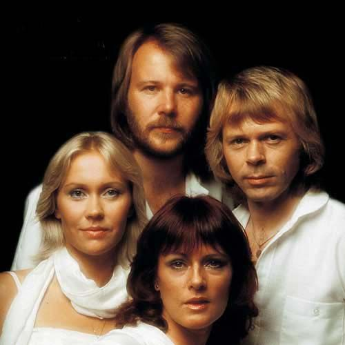

🎹ABBA🎹

¿Quiénes son?
ABBA es un grupo musical sueco formado en 1972 por Agnetha Fältskog, Björn Ulvaeus, Benny Andersson y Anni-Frid Lyngstad. Su nombre surge de las iniciales de cada integrante y rápidamente se convirtió en uno de los grupos más influyentes de la historia del pop.
Su música combina pop, disco y soft rock, y sus canciones siguen siendo himnos generacionales que atraviesan décadas. Aunque el grupo se separó en 1982, su legado continúa vivo gracias a musicales, películas y nuevas generaciones que redescubren su sonido.
Canciones más escuchadas
| Canción | Álbum | Año |
|---|---|---|
| Dancing Queen | Arrival | 1976 |
| Mamma Mia | ABBA | 1975 |
| Waterloo | Waterloo | 1974 |
| Gimmie! Gimmie! Gimmie! | Greatest Hits Vol. 2 | 1979 |
| The Winner Takes It All | Super Trouper | 1980 |
Sneak Peeks (mis favoritas)
If It Wasn´t For The Nights
Voulez-Vous
Lay All Your Love On Me